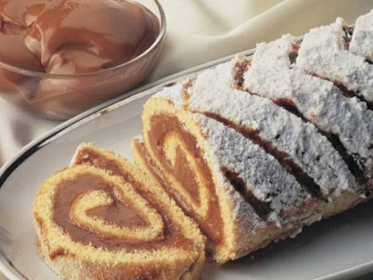

Brazo de reina con crema chantillyy

El brazo de reina es una preparación tradicional que destaca por su presentación elegante y su textura suave y esponjosa. En esta receta, el bizcocho se enrolla con una capa generosa de crema chantilly firme que no se escurre al cortar, lo que permite obtener porciones perfectas y bien definidas. Además, su sabor neutro permite combinarlo con frutas, manjar o chocolate, convirtiéndolo en una opción perfecta para cualquier celebración.